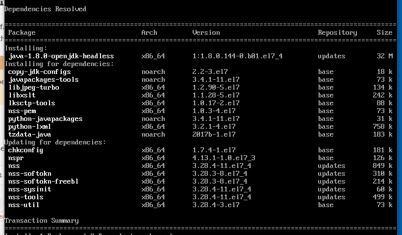
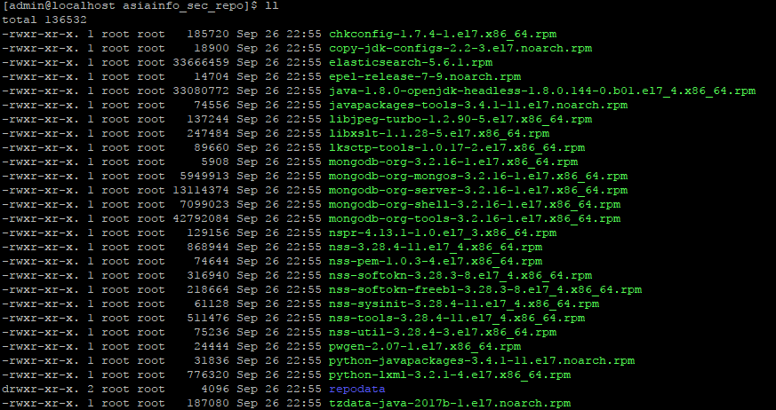

Local Yum Repo (CentOS 7) / 本地Yum源¶
| date: | 2017-11-14 |
|---|---|
| tags: | Linux, CentOS |
| category: | Tools |
| slug: | local_yum_repo |
| author: | Brian Shen |
| summary: | Local Yum Repo |
Contents
Prepare the packages / 准备安装包¶
Find a clean CentOS with network available.
找一个干净的 CentOS 环境，并且接通网络。
Download Software Packages 下载软件包
To download software and their dependencies, you can just use native
yum.只需要使用
yum就可以下载并且解析依赖包。Create a folder / 创建文件夹
mkdir ais_repo cd ais_repoDownload OpenJDK / 下载 OpenJDK
sudo yum install --downloadonly --downloaddir ./ java-1.8.0-openjdk-headless.x86_64

Make Local Repo / 制作本地 Yum 库
It seems quite hard to create your own repo, since there are lots of package information to create and add. But actually it is quite simple, and you can just make repo with simple commands.
看起来很是复杂，因为有很多的依赖关系，但实际上，只需要很简单的命令就可以。
Install
createrepo/ 安装createreposudo yum install createrepocreate a directory to put packages and then make repo in that folder
创建一个目录来保存这些安装包。并且，制作安装包的元文件信息。
sudo mkdir /usr/share/ais_repo sudo mv ./* /usr/share/ais_repo sudo createrepo -v /usr/share/ais_repo
Let’s see what happened: / 看看发生了什么
As you can notice, there is an extra folder
repodata. Now, this is a local repo.可以看出来，文件夹中多了一个
repodata。
Use your own REPO / 使用这个Yum源¶
Backup all the repo files. / 备份已经存在的 Yum 源配置文件
cd /etc/yum.repos.d/ sudo mkdir bak sudo mv *.repo ./bakCreate local repo source file
/etc/yum.repos.d/local.repo为本地的Yum源添加配置
#name [local_server] #description name=Thisis a local repo #yum source baseurl=file:///usr/share/ais_repo enabled=1 #check GPG-KEY gpgcheck=0
Make local yum source, clear cache and start cache. 清除缓存，开始使用本地Yum源。
sudo yum clean all sudo yum makecache
Installation / 安装¶
cd /usr/share/ais_repo/
sudo yum install java-1.8.0-openjdk-headless-1.8.0.144-0.b01.el7_4.x86_64.rpm